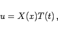
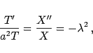
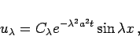
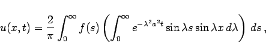

Inhalt Index DeskTop Bronstein

 Differentialgleichungen Partielle Differentialgleichungen Lineare partielle Differentialgleichungen 2. Ordnung Integrationsmethoden für lineare partielle Differentialgleichungen 2. Ordnung
Differentialgleichungen Partielle Differentialgleichungen Lineare partielle Differentialgleichungen 2. Ordnung Integrationsmethoden für lineare partielle Differentialgleichungen 2. Ordnung


Die Wärmeausbreitung in einem homogenen Stab, dessen eines Ende im Unendlichen liegt, während das andere unter konstanter Temperatur gehalten wird, beschreibt die lineare partielle Differentialgleichung 2. Ordnung vom parabolischen Typ
die im Gebiet den Anfangs- und Randbedingungen
| (9.94b) |
genügt. Dabei soll angenommen werden, daß die Temperatur im Unendlichen Null beträgt. Zur Lösung wird die Methode der Variablentrennung verwendet (s. auch Wärmeleitungsgleichung für ein homogenes Medium).
Der Separationsansatz
|  | (9.94c) |
eingesetzt in (9.94a), liefert die Beziehung
|  | (9.94d) |
wobei der Parameter  in Analogie zu dem Vorgehen in den Beispielen A bis D eingeführt wird. Als Lösung für T(t) erhält man
in Analogie zu dem Vorgehen in den Beispielen A bis D eingeführt wird. Als Lösung für T(t) erhält man
| (9.94e) |
Für X(x) ergibt sich mit der Randbedingung X(0) = 0
| (9.94f) |
und somit
|  | (9.94g) |
wobei  eine beliebige reelle Zahl sein kann. Die Lösung kann daher in der Form
eine beliebige reelle Zahl sein kann. Die Lösung kann daher in der Form
| (9.94h) |
angesetzt werden. Aus der Anfangsbedingung u|t=0 =f(x) folgt die Gleichung
die erfüllt ist, wenn für die Konstante
| (9.94j) |
wie bei der Bestimmung der FOURIER-Koeffizienten gesetzt wird. Einsetzen in in (9.94i) ergibt
|  | (9.94k) |
und nach Ersetzen des Produkts der Sinus- durch eine Differenz von Kosinusfunktionen (2.114) und unter Benutzung von Formel (21.46) in der Tabelle bestimmter Integrale erhält man schließlich
| (9.94l) |